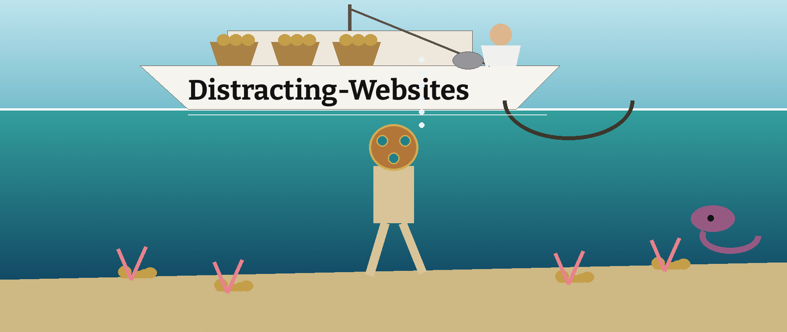
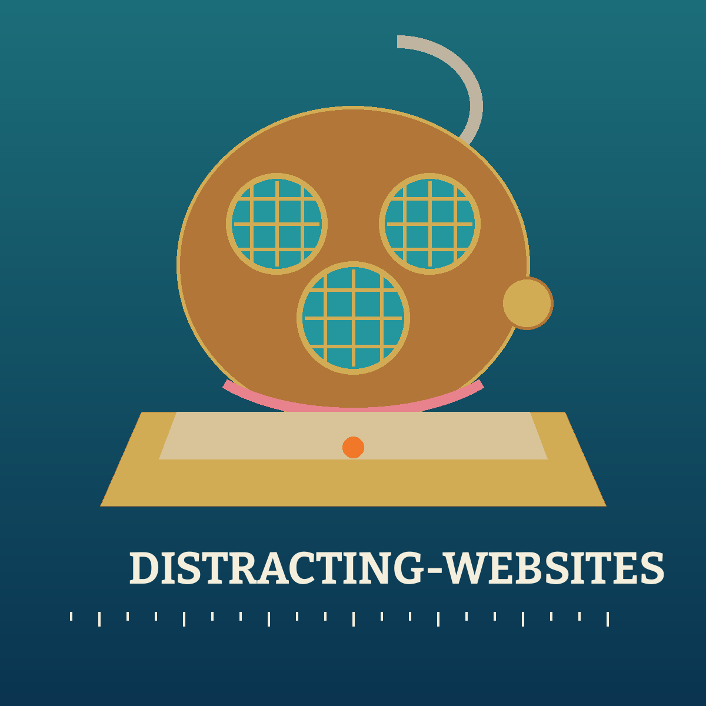
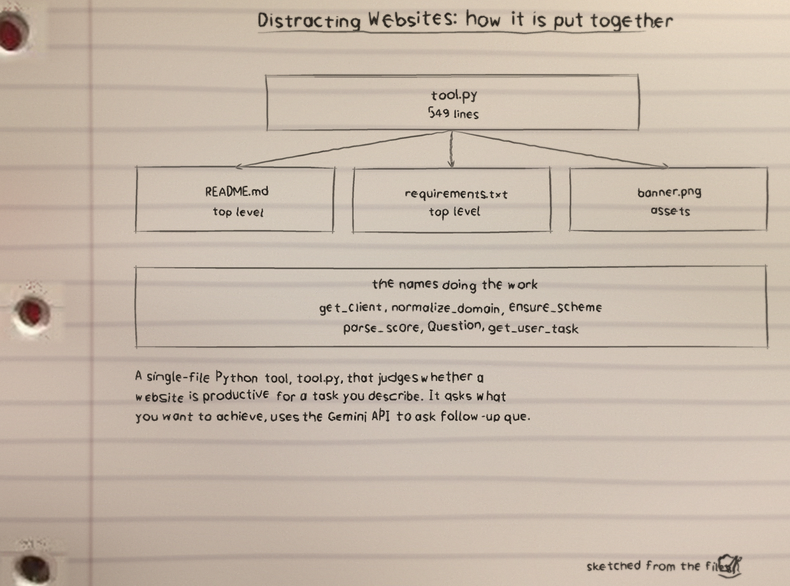
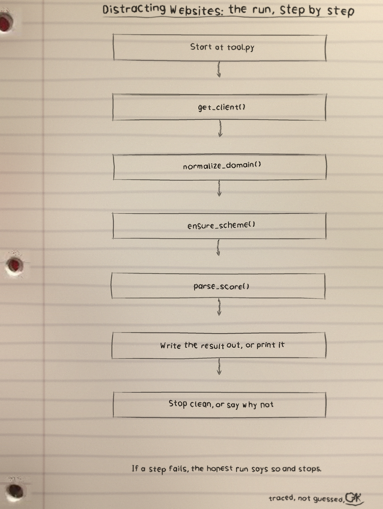
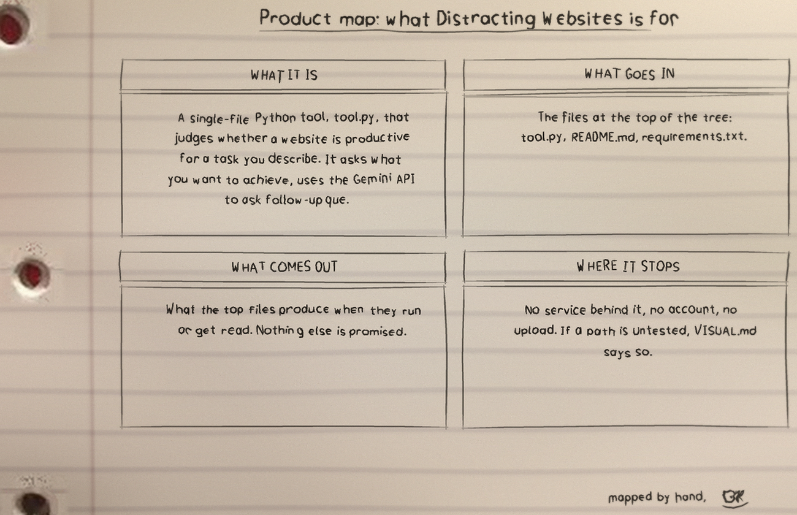

Distracting Websites
github.com/Epsilon0xCell/Distracting-Websites
A single file Python tool, tool.py, which questions you until your task is specific, then scores each website you enter against that task and prints productive or not productive. It advises. It blocks nothing.
First fathom: sharpening the question
Gemini scores the task description for specificity across subject, task type, context and resource needs, asks follow up questions below the threshold, merges the answers, up to 10 rounds.
Second fathom: down the line
What the tool gathers per site: title, meta description, headings and opening paragraphs, keyword counts for entertainment, social and advertising matter, a capped distraction ratio between 0 and 1, and the local fast answer for classroom.google.com and khanacademy.org with no fetch and no API call.
Third fathom: the gauge reading
75
Gemini scores 0 to 100, productive at 75 or above, fixed base scores of 90 for Google Classroom and 85 for Khan Academy, and the scaling down by 0.8 to 0.9 applied to youtube.com, facebook.com and tiktok.com before the threshold bites.
Fail closed rules: refused fetches and HTTP errors count as failed fetches, out of range model scores count as no score.
Bottom tag: rigging and limits
pip install -r requirements.txt
export GEMINI_API_KEY="your key here"
python3 tool.pyGEMINI_API_KEY or GOOGLE_API_KEY from Google AI Studio. Type exit or quit at the prompt. 22 tests, with every fetch and the Gemini client mocked. Privacy note: fetched pages and the task text go to the Gemini API.
Tests today: 22 tests in the repo, all fetches and the Gemini client mocked, so no network or API call happens in the test run.
The code, as it sits in the repo
From tool.py, line 17 on. I did not tidy it for the page. What you see is what the file has.
_client = None
def get_client():
global _client
if _client is None:
api_key = os.environ.get("GEMINI_API_KEY") or os.environ.get("GOOGLE_API_KEY")
if not api_key:
raise RuntimeError(
"No Gemini API key found. Set the GEMINI_API_KEY environment "
"variable to a key from Google AI Studio and run again."
)
_client = genai.Client(api_key=api_key)
return _client
def normalize_domain(website: str) -> str:
# urlparse only fills netloc when a scheme is present, and callers type
# addresses in forms like "khanacademy.org" or "www.khanacademy.org".
candidate = website if "://" in website else "https://" + website
domain = urlparse(candidate).netloc.lower().split(":")[0]
if domain.startswith("www."):
domain = domain[4:]
return domainThe files
| File | Lines |
|---|---|
tool.py | 549 |
README.md | 65 |
requirements.txt | 3 |
6 files, 617 counted lines.
The sheets
The full set is the Distracting-Websites-Visuals folder in the repo.


